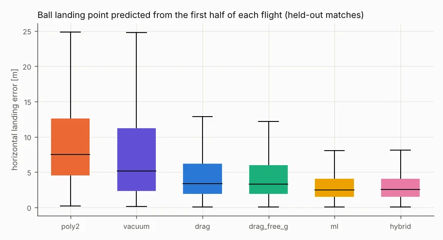
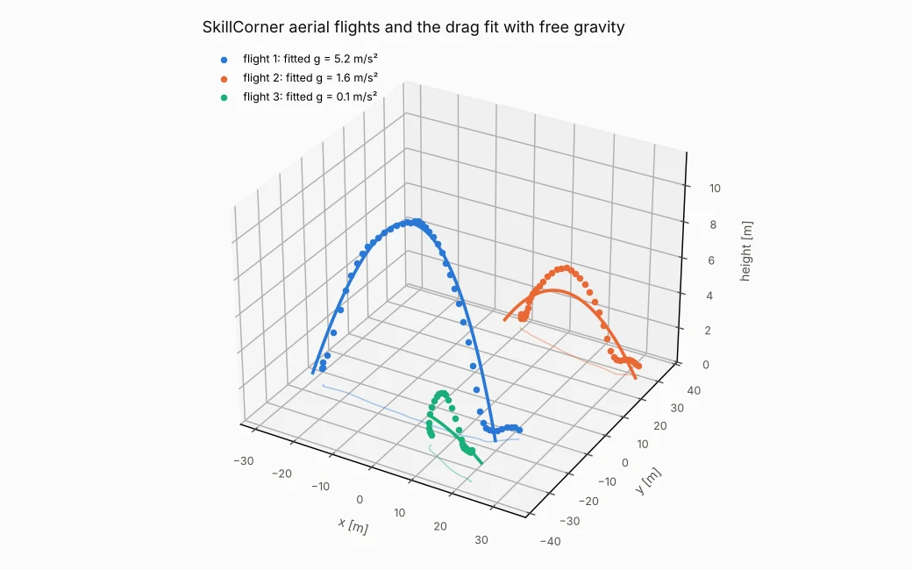
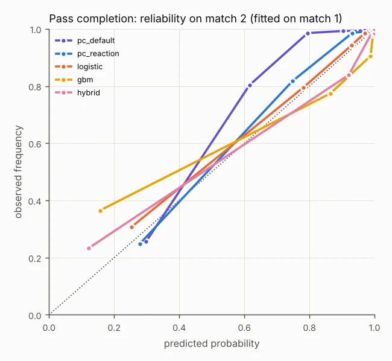

Tracking and event data is cheap and abundant, and the temptation is to throw all of it into a model. The question in this experiment is narrower and more useful: when physics comes in, does it pay? Across four fronts, the answer was not the same.
The ball: drag, Magnus and a gravity that is not 9.81
On high flights in public tracking data, the fit that leaves gravity free returns 6.09 m/s² as a median. The ball did not get lighter: the broadcast data carries a bias, and the fit exposes it instead of hiding it. On simulated kicks with 0.2 m of noise, the same fit recovers the drag coefficient to within 0.024.
In practice, predicting where the ball lands from the first half of the flight alone: the polynomial fit errs 7.51 m; drag plus Magnus errs 3.37 m; the hybrid model 2.55 m; the learned model 2.44 m. All of them scored on the matches left out of the fit.


The pass: pitch control against the data-only model
Pitch control computes, for every point of the pitch, whether a player gets there before the ball. The pass model that uses that field, with the player's reaction time, scored a log-loss of 0.150 on the test match; logistic regression on event features alone scored 0.174 and gradient boosting 0.231. One match to fit, the other to test.

Expected goals: here physics did not pay
On Euro 2024 shots, the model with the physics features scored a log-loss of 0.2429 against 0.2413 for the same model without them. Worse, and inside the noise. The published StatsBomb xG on the same test set sits at 0.2267. The conclusion was recorded as negative: for a shot, what decides is the context, not the ball's trajectory.
What is left
Three out of four. Where physics is the phenomenon, as with a ball in the air or a player's time to reach a point, it wins by a wide margin. Where it enters as one more column in a feature table, it wins nothing. Knowing the difference before selling the solution is half the work.